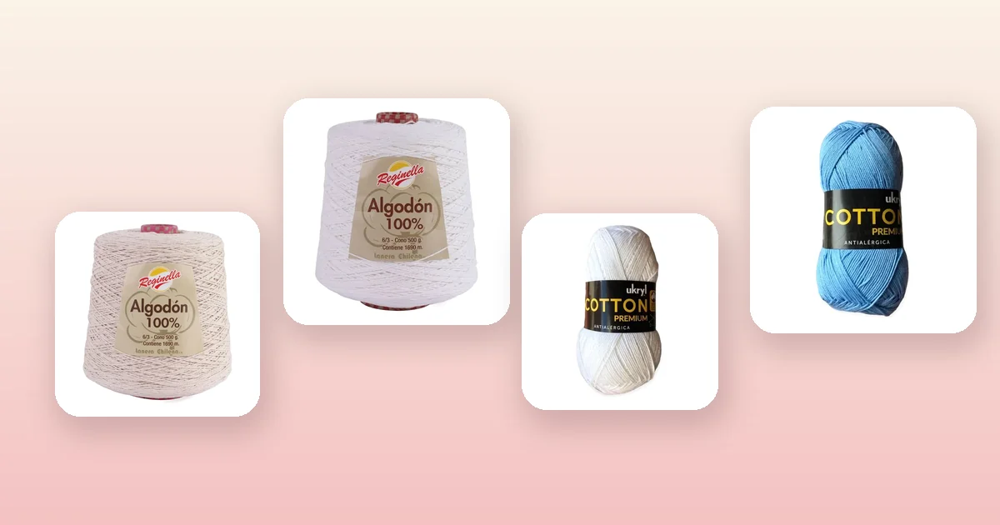

Proyectos de crochet
Cómo tejer una cortina a crochet paso a paso
Las cortinas a crochet transforman cualquier ventana con un toque artesanal y cálido. En esta guía te enseñamos 3 diseños — filet crochet con rombos, cortina de franjas y visillo calado —, qué hilo elegir, cómo calcular las medidas y todos los trucos para que tu cortina quede profesional desde el primer intento.

Materiales y qué hilo elegir
Una cortina a crochet necesita un hilo resistente que soporte su propio peso sin deformarse. El algodón es la fibra ideal porque no se estira, resiste la luz solar y se lava sin perder forma. Necesitas:
- Ganchillo de 2,5 a 3,5 mm según el grosor del hilo. Un ganchillo fino da un tejido más tupido; uno más grande, un tejido más calado y ligero. Si no sabes qué número usar, revisa la guía de qué aguja o ganchillo usar.
- Cinta métrica para medir la ventana y la cortina a medida que avanzas.
- Aguja lanera para esconder las hebras al unir hilos.
- Tijeras.
- Barra de cortina o tubo de madera o metal para colgar.
El hilo más rendidor para cortinas es el cono de algodón: con 500 g y más de 1.600 metros alcanza para una cortina completa de ventana estándar. Los ovillos de 100 g son una buena opción si quieres tejer en varios colores o una cortina pequeña. Las mejores opciones:
- Cono de Algodón Crudo: el color natural del algodón sin teñir. 500 g y 1.690 m. El tono crudo es el clásico de las cortinas a crochet: deja pasar la luz con calidez y combina con cualquier decoración.
- Cono de Algodón Blanco: limpio y luminoso, ideal para ventanas donde quieres máxima claridad. 500 g y 1.690 m. Perfecto para cocinas, baños y dormitorios con decoración minimalista.
- Hilo de Algodón Blanco: 100 g y 200 m por ovillo. Ideal si quieres tejer una cortina pequeña (ventana de baño) o combinar con otro color para un diseño bicolor.
- Hilo de Algodón Celeste: 100 g y 200 m. Un toque de color suave para cortinas de dormitorio infantil o cocina.
Si quieres conocer las diferencias entre fibras, consulta la guía de tipos de lana para tejer.
Medidas estándar y cómo calcular
El primer paso para tejer una cortina es medir bien la ventana. La cortina debe ser más ancha que el hueco de la ventana para que tenga vuelo y se vea generosa cuando está colgada.
| Tipo de ventana | Ancho de ventana | Ancho de cortina | Largo sugerido |
|---|---|---|---|
| Ventana de baño | 60 – 80 cm | 80 – 100 cm | 80 – 100 cm |
| Ventana estándar | 100 – 120 cm | 130 – 160 cm | 120 – 150 cm |
| Ventana grande | 150 – 200 cm | 200 – 260 cm | 150 – 200 cm |
| Puerta | 80 – 90 cm | 100 – 120 cm | 180 – 210 cm |
Regla del vuelo: el ancho de la cortina debe ser entre 1,3 y 1,5 veces el ancho de la ventana. Con ese extra la cortina tiene caída natural y no queda tirante como un paño plano.
Largo: mide desde la barra hasta donde quieres que llegue la cortina. Agrega 5 cm extra para compensar un posible encogimiento del algodón en el primer lavado, más los centímetros de las presillas superiores.
Cómo hacer la muestra de tensión
La muestra es esencial en cortinas porque una diferencia de 1 punto por centímetro se multiplica a lo largo de un metro. Sigue estos pasos:
- Teje un cuadrado de al menos 15 × 15 cm con el punto y ganchillo que vas a usar.
- Lávalo y sécalo plano (el algodón cambia de tensión después del primer lavado).
- Cuenta cuántos puntos hay en 10 cm de ancho y cuántas filas en 10 cm de alto.
- Divide el ancho deseado de tu cortina entre 10 y multiplica por los puntos contados. Ese es el número de cadenas iniciales que necesitas.
Por ejemplo: si cuentas 22 puntos en 10 cm y quieres una cortina de 140 cm de ancho, necesitas 22 × 14 = 308 cadenas base (ajusta al múltiplo del patrón).
Diseño 1: filet crochet con rombos
El filet crochet es la técnica clásica para cortinas. Se basa en una grilla de cuadrados llenos y vacíos que forman dibujos geométricos. Es sorprendentemente fácil: solo usa cadenas y puntos altos.
Conceptos básicos del filet crochet:
- Cuadrado vacío (espacio): cadena 2, salta 2 puntos, 1 punto alto en el siguiente. Deja pasar la luz.
- Cuadrado lleno (bloque): 3 puntos altos seguidos (contando el punto alto del borde). Bloquea la luz y forma el dibujo.
Patrón de rombos (repetición de 12 puntos):
- Cadena base: múltiplo de 12 + 3 cadenas. Ejemplo para 25 repeticiones: 303 cadenas.
- Filas 1-3: todo en espacios vacíos (cadena 2, punto alto). Da el borde calado inferior.
- Fila 4: 5 espacios, 1 bloque (inicio del rombo), 5 espacios. Repite.
- Fila 5: 4 espacios, 3 bloques, 4 espacios. Repite.
- Fila 6: 3 espacios, 2 bloques, 1 espacio, 2 bloques, 3 espacios. Repite.
- Fila 7: 2 espacios, 2 bloques, 3 espacios, 2 bloques, 2 espacios. El rombo se abre.
- Filas 8-12: espejo de las filas 6 a 2 para cerrar el rombo.
- Repite las filas 1-12 hasta alcanzar el largo deseado.
El filet crochet se lee de abajo hacia arriba. Si dominas los puntos básicos de crochet (cadena y punto alto), puedes tejer filet sin problema.
Diseño 2: cortina de franjas verticales
Una cortina de franjas se teje a lo largo (de arriba a abajo), no a lo ancho. Cada franja se teje por separado y luego se unen, o se tejen conectadas. Es ideal para principiantes porque es un tejido recto sin cálculos complicados.
- Cadena base: teje una cadena del largo deseado de la cortina (por ejemplo, 150 cadenas para 120 cm de largo con ganchillo 3 mm).
- Fila 1: 1 punto alto en la cuarta cadena desde el ganchillo, *cadena 1, salta 1, 1 punto alto.* Repite hasta el final.
- Fila 2: cadena 4 (cuenta como punto alto + cadena 1), gira. *1 punto alto en el punto alto anterior, cadena 1.* Repite. Esto crea una grilla calada.
- Filas 3 a 8: repite la fila 2. Corta el hilo.
- Franja de unión: entre dos franjas, une con una fila de punto bajo tomando un punto de cada franja alternadamente. O deja un espacio de cadenas entre ambas para un efecto más aireado.
- Repite hasta completar el ancho de la cortina.
Cada franja de 8 filas tiene unos 6-7 cm de ancho. Para una cortina de 140 cm necesitas unas 20 a 22 franjas. El efecto es moderno y minimalista.
Diseño 3: visillo calado con abanicos
El visillo es una cortina ligera que deja pasar la luz tamizada. El punto de abanicos crea un calado elegante que recuerda a las cortinas de encaje.
- Cadena base: múltiplo de 8 + 1. Ejemplo: 201 cadenas para una cortina de ~130 cm.
- Fila 1: 1 punto bajo en la segunda cadena, *salta 3, 7 puntos altos en la siguiente cadena (abanico), salta 3, 1 punto bajo.* Repite.
- Fila 2: cadena 3, 3 puntos altos en el primer punto bajo, *1 punto bajo en el cuarto punto alto del abanico anterior (el central), 7 puntos altos en el siguiente punto bajo.* Termina con 4 puntos altos en el último punto bajo.
- Fila 3: cadena 1, 1 punto bajo en el primer punto alto, *7 puntos altos en el punto bajo, 1 punto bajo en el cuarto punto alto del abanico.* Repite.
- Alterna filas 2 y 3 hasta el largo deseado.
El resultado es un tejido calado que filtra la luz con un patrón de ondas muy decorativo. Queda hermoso en algodón crudo para un estilo rústico, o en blanco para un look más limpio.
Presillas y formas de colgar
Las presillas son los lazos superiores por donde pasa la barra de cortina. Hay varias formas de hacerlas:
- Presillas tejidas: a lo largo del borde superior, cada 8-10 cm teje una cadena de 15-20 puntos, salta 3-4 puntos del borde y une con punto bajo. Eso forma un lazo donde entra la barra. Es la opción más fácil y la más usada.
- Presillas dobles: teje la cadena y luego una fila de punto bajo sobre la cadena para una presilla más gruesa y firme. Ideal para cortinas pesadas.
- Argollas de plástico forradas: forra argollas de cortina con punto bajo y cóselas al borde superior. Da un acabado muy profesional.
En todos los casos, teje primero una fila de punto bajo doble (2 vueltas de punto bajo) a lo largo de todo el borde superior. Esto refuerza la parte que soporta el peso y evita que la cortina se estire en ese punto.
Bloqueo y terminaciones
El bloqueo es el paso que transforma una cortina arrugada en una pieza profesional:
- Lava la cortina en agua tibia con un poco de jabón neutro. Enjuaga bien.
- Escurre suavemente sin retorcer (el algodón mojado pesa mucho). Enrolla en una toalla para quitar el exceso de agua.
- Estira sobre una superficie plana (el piso limpio, una cama con un plástico debajo) y fíjala con alfileres de bloqueo a las medidas exactas.
- Deja secar completamente antes de colgar. El algodón toma la forma al secarse.
Si quieres una cortina más rígida, agrega almidón: disuelve 2 cucharadas de maicena en 1 litro de agua tibia, sumerge la cortina unos minutos, escurre y bloquea. El almidón se va con el lavado.
Para esconder las hebras de unión de hilos, pásalas con aguja lanera por dentro del tejido en zigzag durante al menos 5 cm. En cortinas, la contraluz revela cualquier hebra suelta, así que sé especialmente prolija.
Cómo lavar y cuidar tu cortina
Las cortinas de algodón a crochet duran años si las cuidas bien:
- Lava a mano en agua fría o tibia con jabón neutro. El agua caliente encoge el algodón.
- No uses cloro aunque la cortina sea blanca. El cloro debilita las fibras del algodón. Para blanquear, usa percarbonato de sodio o bicarbonato.
- Seca estirada, nunca en secadora. Cuelga la cortina mojada directamente en su barra para que seque con su propio peso y mantenga la forma.
- Plancha con vapor si es necesario, a temperatura media. El algodón soporta bien el calor, pero no aplastes el tejido: plancha sin presionar para que los puntos mantengan su relieve.
Para más tips, consulta la guía completa de cómo lavar y cuidar la lana.
Errores comunes y cómo evitarlos
- La cortina se angosta hacia arriba. Estás perdiendo puntos en los bordes. Cuenta los puntos al final de cada fila y asegúrate de tejer en el punto alto de la cadena 3 inicial de la fila anterior.
- La cortina pesa y se estira. Estás usando un hilo demasiado grueso o con acrílico. Cambia a algodón puro con ganchillo fino. Las cortinas caladas (con muchos espacios) pesan menos que las densas.
- Los bordes laterales se ven ondulados. Agrega un borde de punto bajo a cada lado de la cortina terminada. Una fila de punto bajo a lo largo de cada lateral da un acabado recto y firme.
- El hilo se acaba a mitad de fila. En cortinas, la unión de hilos se nota más porque la contraluz es implacable. Une siempre al inicio de una fila, nunca a mitad. Si vas a quedarte sin hilo, corta y une al inicio de la fila siguiente.
- La cortina no queda recta al colgar. El bloqueo húmedo no fue suficiente. Vuelve a mojar, estira y fija con alfileres. Si persiste, revisa que las presillas estén distribuidas de forma pareja y que la barra esté nivelada.